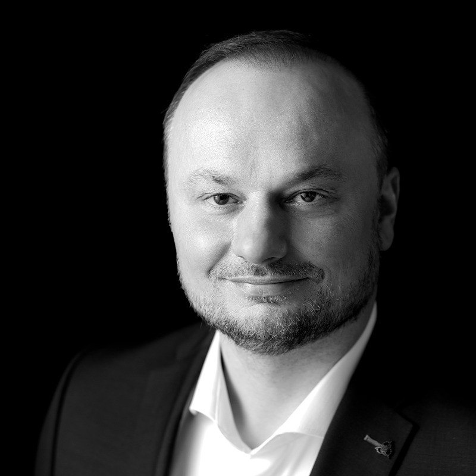

Satellites, models, and the stubborn question of whether the number on the screen means anything outside the room it was produced in.
Ari Atoll, Maldives — contains modified Copernicus Sentinel-2 data.
© ESA, CC BY-SA 3.0
IGO

Born in the Opole region of Upper Silesia and raised in the Rottal-Inn district of Lower Bavaria, I started out fifteen years ago with ESA feasibility studies: working with the eventual users to establish whether a satellite-based application holds up technically and commercially, before anything gets built. That work grew into my own startup — which failed in the end, but which decided everything that came after it.
I did my doctorate in precision farming, remote sensing and machine learning, and then worked at ESA as a postdoctoral researcher, among other things on hybrid models and on domain adaptation with self-supervised learning.
Today I work through my own engineering practice for clients who need dependable models from satellite, time-series and sensor data — and who need to know how far those predictions hold outside the training data.
The way I work is still shaped by systems engineering: clarify the requirements, define the interfaces, make the assumptions explicit and verify them before anything gets built. In the age of agent systems those principles have become more valuable, not less — when code appears in minutes, what decides the outcome is whether the right thing was built and whether you can check that it works.
As an independent consultant I choose my partners and teams deliberately, and I value working with people who act with integrity, professionally as well as personally.
Where the road leads in the long run is still open — and that is precisely what makes it interesting.
What these fifteen years taught me is that I cannot accept work without real value. What drives me is building solutions that solve actual problems and create impact.
If that sounds like the kind of engagement you have in mind, the case studies show how it looks in practice, or just send me an e-mail — I reply within one working day.
Career history and publications: